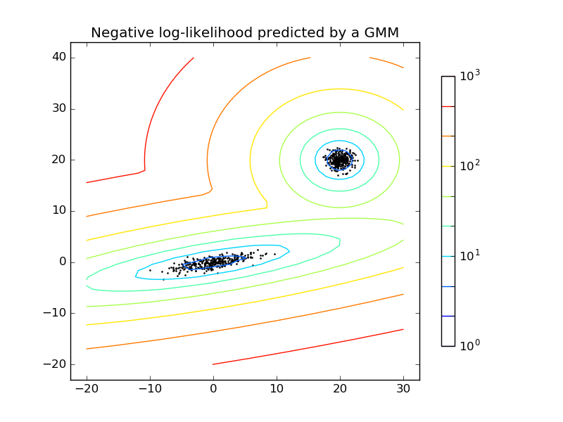
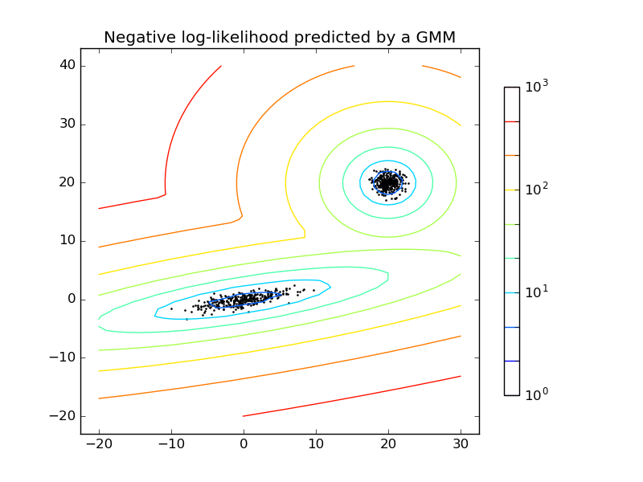

高斯混合模型
sklearn.mixture包，用来学习高斯混合模型（支持对角线型、球形、绑定或全协方差矩阵），采样高斯混合模型，从数据中估计高斯混合模型。也提供了工具来帮助决定最合适的组成成分数量。

sklearn.mixture包，用来学习高斯混合模型（支持对角线型、球形、绑定或全协方差矩阵），采样高斯混合模型，从数据中估计高斯混合模型。也提供了工具来帮助决定最合适的组成成分数量。

原文链接
注：翻译的时候并没有完全按照原文，有些地方自我觉得原文写的不是很清楚（比如，一些安装步骤等），我就按照自己的实际操作经验来写的
Zotfile是一款用来管理附件的Zotero插件，主要可以：自动重命名、移动或者附加PDFs（或其他文件）到Zotero条目，将你Zotero库中的PDFs同步到你的（移动）PDF阅读器（比如，iPad，Android平板电脑），从PDFs中摘取注释。
以前曾在另一篇博文中记录了前端开发神器Webstorm，最近看到Sublime Text中的Emmet插件，觉得比webstorm还棒~~~ 这里主要简单记录下常用的语法结构。
Emmet的安装超级简单啦，跟其他sublime text插件一样一样滴。安装好以后，赶紧新建个html文件，感受下Emmet吧！
译者注：其实越往后翻译，越觉得仅凭文中作者所写的解释，无法看懂图片表示的真正含义，需要去到图片源头出处看才行。难道是水平有限。。。飘过~~~~
当当当~~~正文开始：
我发现，在解释机器学习基础概念的时候经常会碰到几张相同的图片。下面我列出我觉得最具启发性的10张。
为什么更低的训练误差并不总是一件好事情：ESL Figure2.11. 测试和训练误差是模型复杂度的函数。
觉得原文不错，就翻译过来了。才疏学浅，还请各路豪杰批评指正。原文在这里
你怎么知道为自己的分类问题选择哪一种机器学习算法？当然，如果非常在意准确度的话，最好的做法是，测试几个不同的算法（确保每个算法都尝试过不同的参数），然后通过交叉验证选择一个最好的。但是，如果你只是想为你的问题找到一个“足够好”的算法，或者是找到一个起始点，那么在这里我会给出多年来我所发现的比较有用的通用准则。
1. 在2006年深度学习技术开始在一些任务中表现出众，为什么现在才热起来？
我看书大约经历这么几个阶段：偶然看到一本喜欢的小说，先爱上读书；不断找人推荐，上网搜索，看些公认的“好书”，有时看过都不知道其好在哪里，纵然可悲！但也不乏真的喜欢的，怀着一种兴奋感，如痴如醉的看完，脑海中不断回放书中的片段，内心不乏悸动；而今，看书已到了一个随意的阶段，不是每天必做的一件事，却是生活中少不了的一部分。为此，我感到高兴。读书，并不一定非要从中得到知识的进步，特别是小说，有时读过一本小说，我甚至只能记住里面的几句话、几个词。但我想，最关键的收获应该是为书中故事所感动，获取心灵的满足感，而后生活的更从容、更知足一点。
在没有看《灿烂千阳》之前，《追风筝的人》已经成为我心目中的经典，拜读《灿烂千阳》之后，恩。。。心中的经典又多了一部。自认为，这部小说比《追风筝的人》来说，故事更加成熟与生动。书中各种贴切的隐喻，让我忍不住拍手叫好！
一直以来，我都不太喜欢看以战争为背景的小说，第一次改变我这种想法的是《追风筝的人》，这是第二次。虽然这不是我第一次看完一本书想写点什么，不过大多数情况，作为懒惰的忠实拥护者，我都没有动过笔头记录下来。也是觉得自己看书就是一种消遣，总是对书的主旨不得要领，甚至有时候喜欢一本书只是因为一种感觉，一段话，一句话，几个词语而已。更是怕自己不成熟的见解会误导他人（想来看到的也不会很多，影响不会大，还算心安）。
好像扯远了，再回到《偷书贼》上来，书名总是容易让人望文生义（未阅读之前，一度以为这定是一个关于书迷的故事），所以这本书一直存在于浏览目录中，未曾读过。还在与书注定的缘分没有擦肩而过。该怎么说说这本书呢，就说说我喜欢的部分吧。
作者：仓央嘉措
那一刻
我升起风马 不为祈福 只为守候你的到来
那一日
垒起玛尼堆 不为修德 只为投下心湖的种子
那一月
我摇动所有的经筒 不为超度 只为触摸你的指尖
那一年
磕长头在山路 不为觐见 只为贴着你的温暖
那一世
转山 不为轮回 只为途中与你相见